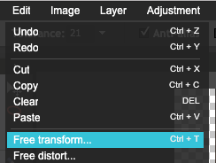

How Do I Do It?
Video:
Or in writing:
0. Before you can start, you'll need a photo taken on a green background. You can use your iPad or phone to take one in the library (then email it to yourself and save it onto your computer), or you can use one of these instead:
1. Once you have a photo to work with, go to Pixlr, and open the photo:
2. You may need to flip or rotate your image. If you do, click Image → Rotate or Image → Flip:
3. You might want to crop your image (cut off part of it). If you do, click this button...
...then click and drag across the part of the image you want to keep:
Finally, click somewhere outside your image. You'll see this box. Click Yes if you like your smaller image or No to try again.
4. Before you can remove the background, you'll need to unlock it so it becomes transparent instead of white.
If you look in the Layers Bar, you'll see that your image is the background. And there's a lock next to it. Double-click on the lock, and it will change to say Layer 0 and checkbox.
5. Now it's time to remove the background! The wand tool is the right choice here, but it might not get the whole background, like this.
If that's the case, you can try adjusting the tolerance. Slide it up if you want to grab more green, and down if you want it to select less (especially if it's choosing parts of the people instead of just the background.
6. You can also select more sections by holding the Shift key on your keyboard - you'll see the mouse cursor change to show a + sign - and clicking more green sections.
7. Once you have all of the background selected, tap the Delete key to remove it. The gray and white checkers you see in the background mean that it's transparent - there's nothing there!
8. Next, you'll need a picture! A website like Unsplash or Pexels is a really good place to look.
When you find a good picture, save it in your IT Club folder.
9. Back to Pixlr! To add your picture, click Layer, then Open Image as Layer. Then find your image.
10. Your new image will now be open on top of your first image. If you look in the Layers Bar, you'll see that you now have a Layer 1 and a Layer 0.
Drag Layer 1 down below Layer 0 to move the background behind your first image.
11. If you want to change the size, position, or rotation of your background, use Free Transform (just like with your pumpkin/emoji):

And you're done! Way to go:
When you're done...
- Make sure your creation is saved...
- as a .PNG
- with a useful name
- in your folder for this club
- Extend your skills: try...
- using multiple greenscreened pictures to create a comic strip
- adding pieces from multiple images (for example, adding another character to your picture)
- taking greenscreen photos to put yourself/your friends into a famous painting or photo
- Go back and choose something else!